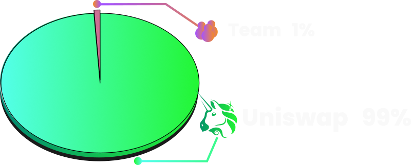

The tokenomics of AVO are structured with intriguing and unique mechanisms to establish growth.
This memecoin, powered by a sense of humor and a nod to millennial breakfast trends, boasts a supply of which 99% is deployed to a Uniswap v3 liquidity pool. This liquidity is deployed and locked within the token contract, and it is protected from removal, thus providing critical stability to the token value. Uniswap v3 uses NFT liquidity positions, the owner of liquidity is the token contract itself and there are no functions in the contract to remove or transfer it. Code is verified on Etherscan.
The remaining 1% of the supply is distributed to the MemesOnMondays team. This ensures aligned motivation and gives them a vested interest in the token's success.
The MemesOnMondays team is bracing itself for the thrill of launching a new memecoin each week, iterating upon previous versions and hoping to create a memecoin that goes viral and becomes a billion dollar market cap giant. As we improve and refine our processes, we dream of lambos and girlfriends, riding high on the wave of internet culture. We welcome enthusiasts and traders to join us in our exciting journey to disrupt crypto markets with humor and a spirit of innovation, to become the greatest memecoin creators on planet Earth.
The starting price on exchange is set at $0.00033, this figure has been choosen because it enables a lot of upside potential without enabling MEV bots to take massive allocations of the supply. The total supply is 1 Billion tokens which gives the project a market cap of $330,000 USD at launch.